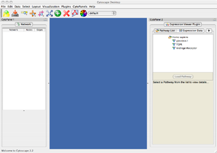
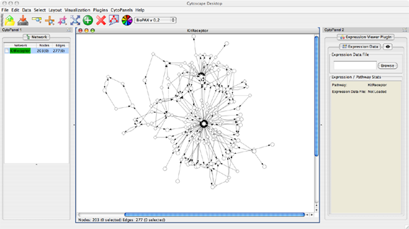
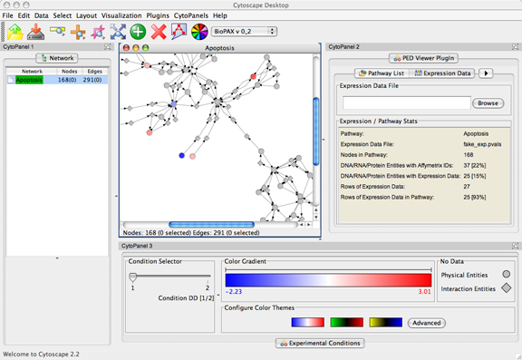

Cytoscape Expression Viewer PlugIn
1. Introduction
The Expression Viewer plugin enables Cytoscape users to visual expression data in the contect of cPath Pathways.
Updates regarding this plugin will be posted to the Cytoscape-announce mailing list. You can easily subscribe to the mailing list or browse the archives.
2. Using the Expression Viewer PlugIn
-
Start Cytoscape. For example, run: ./cytoscape.sh or cytoscape.bat.
-
Load a Pathway by selecting one from the Pathway List then clicking on the "Load Pathway" button. A good Pathway to select for use with our sample expression data file is the KitReceptor.
Below is a sample screenshot of the Pathway List:

[Click to enlarge]
-
Load an Expression Data File by selecting the Expression Data Tab then clicking on the "Browse" button. This will create a Dialog Box from which you can select a file containing Expression Data (file format notes). You can find our sample data file here.
Below is a sample screenshot of the Expression Data Panel:

[Click to enlarge]
-
After loading a Pathway and Expression Data, the Experimental Conditions Panel will appear. This window contains the following elements:
-
A Condition Selector which allows you to move between Experimental Conditions.
-
A Color Gradient which indicates for a selected node where its pValue falls in the domain of all possible pValues (denoted by a black tick mark that appears above the gradient when a node is selected).
A Configure Color Theme Panel which allows you to change the Color Gradient spectrum and/or change the MIN/CENTER/MAX values of the Color Gradient.
-
A Legend which indicates the color that nodes containing no expression data are colored.
Below is a sample screenshot of the Experimental Conditions Panel:

[Click to enlarge]
3. Understanding Visual Rendering Clues
By default, the Expression Viewer PlugIn renders nodes and edges as follows:
|
BioPAX Entity
|
Visual Shape
|
|
BioPAX Physical Entities, such as proteins, small molecules, complexes, etc.
|

|
|
BioPAX Interaction Entities, such as biochemical reactions, catalysis, etc.
|

|
|
BioPAX Edge Type
|
Arrow Shape
|
|
Inhibition
|

|
|
Containment, e.g. a complex can contain one or more proteins.
|

|
|
All other edge types, e.g. activation, left, right, etc.
|

|
5. Bugs / Feature Requests
If you encounter a bug with this plugin, email Benjamin Gross or Ethan Cerami at the address(es) below, or log a bug directly to the Cytoscape Bug Tracker. 6. Contacts
Sander Group, Computational Biology Center
Memorial Sloan-Kettering Cancer Center, New York City
For any questions concerning this plugin, please contact:
Gary Bader: baderg AT mskcc.org
Benjamin Gross: grossb AT cbio.mskcc.org
Ethan Cerami: cerami AT cbio.mskcc.org
This software is made available under the LGPL (Lesser General Public License).
7. Release Notes / Current Limitations
Version: 0.1
-
Date: March 15, 2006
-
Features:
-
Enables Cytoscape users to visualize expression data in the context of cPath Pathways.
-
Works with Cytoscape 2.2.
-
Supports all Human Affymetrix Chipsets.
Known Limitations / Known Bugs:
-
It is possible (in fact, probable), that there will be multiple expression data values per network node. Which value gets used? The Expression Viewer will map over the value with the largest absolute value.
-
The Expression Viewer makes no distinction between expression data in real or log values.
{kind=link}
{kind=link}
{kind=link}
{kind=link}